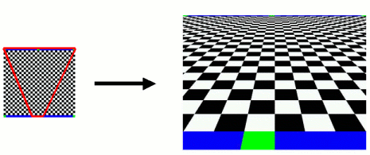

Triangle mapping and perspective warp operations
| Utility Functions | Triangle mapping and perspective warp operations |
| Functions | |
| d2_utility_maptriangle | This function uses d2_settexturemapping to map a texture on a triangle. |
| d2_utility_perspectivewarp | Copies an image in perspective manner to a destination rectangle. |
| d2_utility_fbblitcopy | Copy a rectangular part inside the current framebuffer. |
| d2_rendercircle_no_hilimiterprecision | Enable or disable the high limiter precision feature of the latest D/AVE 2D renderer for drawing blurred circles with higher image quality. |
d2_s32 d2_utility_maptriangle( d2_device * handle, const d2_f32 * points, const d2_f32 * uvs )
This function uses d2_settexturemapping to map a texture on a triangle.
| handle | device pointer (see: d2_opendevice) |
| points | ptr to array of six floats containing the screen positions (x,y pairs) |
| uvs | ptr to array of six floats containing the texture coordinates (u,v pairs) |
Please remember that this function has to access the current texture details (width, height and pitch) in order to calculate a correct mapping. So the final texture must be active in the selected context at the time d2_utility_maptriangle is called. d2_utility_maptriangle is internally using d2_settexturemapping and is overwriting the current values.
errorcode (D2_OK if successfull) see list of Errorcodes for details
d2_s32 d2_utility_perspectivewarp( d2_device * handle, d2_u16 srcwidth, d2_u16 srcheight, d2_s16 srcx, d2_s16 srcy, d2_s16 dstwidth, d2_s16 dstheight, d2_s16 dstx, d2_s16 dsty, d2_u16 wt )
Copies an image in perspective manner to a destination rectangle.
d2_utility_perspectivewarp is internally using d2_settexturemapping and is overwriting the current values.
| handle | device pointer (see: d2_opendevice) |
| srcwidth | width of source rectangle in pixels |
| srcheight | heigth of source rectangle in pixels |
| srcx | x position in source bitmap |
| srcy | y position in source bitmap |
| dstwidth | width of destination rectangle in pixels |
| dstheight | height of destination rectangle in pixels |
| dstx | x position in destination bitmap |
| dsty | y position in destination bitmap |
| wt | 1/z (z>1) value in 16 Bit fraction (z=2 -> wt=65536/2) |
errorcode (D2_OK if successfull) see list of Errorcodes for details
Copy a 256x256 source texture into a 640x480 destination rectangle:
... d2_settexture( handle, texture, 256, 256, 256, d2_mode_rgb565 ); d2_settexturemode( handle, 0 ); d2_setfillmode( handle, d2_fm_texture ); d2_utility_perspectivewarp( handle, 256, 256, 0, 0, 640, 480, 0, 0, 65536/4 ); ...
This function is not meant for dynamic perspective animations.
d2_s32 d2_utility_fbblitcopy( d2_device * handle, d2_u16 width, d2_u16 height, d2_blitpos srcx, d2_blitpos srcy, d2_blitpos dstx, d2_blitpos dsty, d2_u32 flags )
Copy a rectangular part inside the current framebuffer.
This is a wrapper function around d2_blitcopy, which copies a rectangular region inside a single buffer. Source and destination buffer are the current framebuffer, set via d2_framebuffer. This function handles the different cases of potentially overlapping source and destination areas and makes sure no read-after-write problems arise. Note that both source and destination rectangles need to lie fully inside the framebuffer for this function to work correctly.
| handle | device pointer (see: d2_opendevice) |
| width, height | size of source/destination rectangle in pixels (integer) |
| srcx, srcy | top/left coordinate of source rectangle (integer) |
| dstx, dsty | top/left coordinate of destination rectangle (integer) |
| flags | any combination of blit flag bits (see below), passed on to d2_blitcopy |
| d2_bf_no_blitctxbackup | for this blit don’t backup context data for better performance; previous texture modes get lost and must be set again |
errorcode (D2_OK if successful) see list of Errorcodes for details
void d2_rendercircle_no_hilimiterprecision( d2_device * handle, d2_u32 flag )
Enable or disable the high limiter precision feature of the latest D/AVE 2D renderer for drawing blurred circles with higher image quality. Note: This function can be used to de-activate the feature for compatibility reasons (clear D2FB_HILIMITERPRECISION bit in HW revision)!
| handle | device pointer (see: d2_opendevice) |
| flag | 0 will activate the high limiter precision if possible, 1 will deactivate the feature even on newer version of D/AVE 2D. |
This function uses d2_settexturemapping to map a texture on a triangle.
d2_s32 d2_utility_maptriangle( d2_device * handle, const d2_f32 * points, const d2_f32 * uvs )
Copies an image in perspective manner to a destination rectangle.
d2_s32 d2_utility_perspectivewarp( d2_device * handle, d2_u16 srcwidth, d2_u16 srcheight, d2_s16 srcx, d2_s16 srcy, d2_s16 dstwidth, d2_s16 dstheight, d2_s16 dstx, d2_s16 dsty, d2_u16 wt )
Copy a rectangular part inside the current framebuffer.
d2_s32 d2_utility_fbblitcopy( d2_device * handle, d2_u16 width, d2_u16 height, d2_blitpos srcx, d2_blitpos srcy, d2_blitpos dstx, d2_blitpos dsty, d2_u32 flags )
Enable or disable the high limiter precision feature of the latest D/AVE 2D renderer for drawing blurred circles with higher image quality.
void d2_rendercircle_no_hilimiterprecision( d2_device * handle, d2_u32 flag )
Create a new device handle.
d2_device * d2_opendevice( d2_u32 flags )
Define texture mapping.
d2_s32 d2_settexturemapping( d2_device * handle, d2_point x, d2_point y, d2_s32 u0, d2_s32 v0, d2_s32 dxu, d2_s32 dyu, d2_s32 dxv, d2_s32 dyv )
Copy rectangle part of the source into destination.
d2_s32 d2_blitcopy( d2_device * handle, d2_s32 srcwidth, d2_s32 srcheight, d2_blitpos srcx, d2_blitpos srcy, d2_width dstwidth, d2_width dstheight, d2_point dstx, d2_point dsty, d2_u32 flags )
Specify the rendering target.
d2_s32 d2_framebuffer( d2_device * handle, void * ptr, d2_s32 pitch, d2_u32 width, d2_u32 height, d2_s32 format )